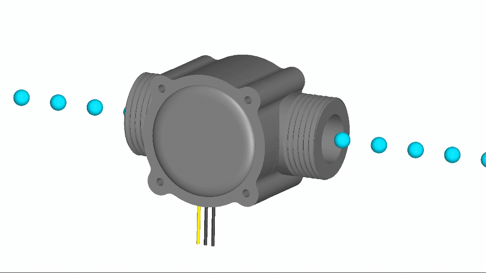
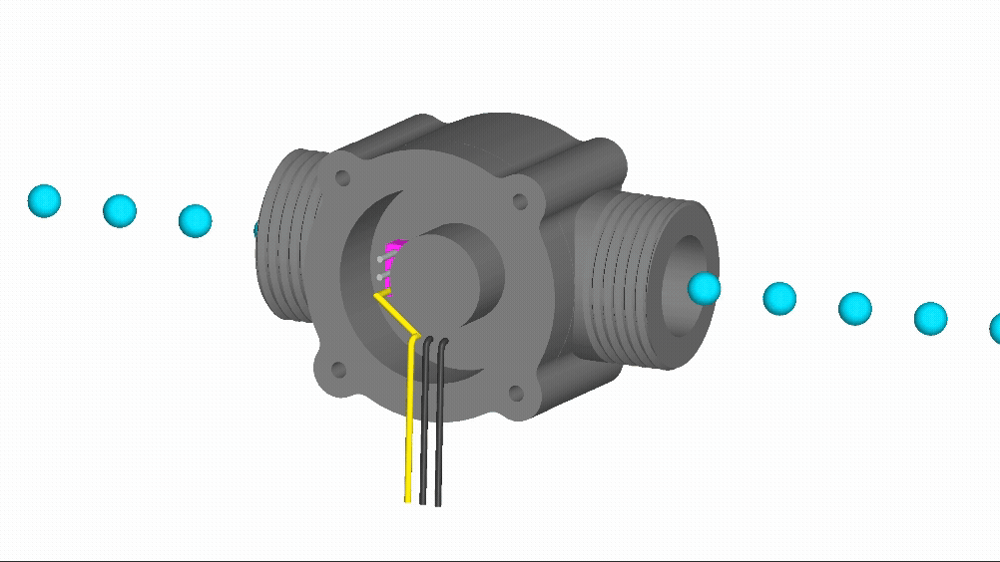
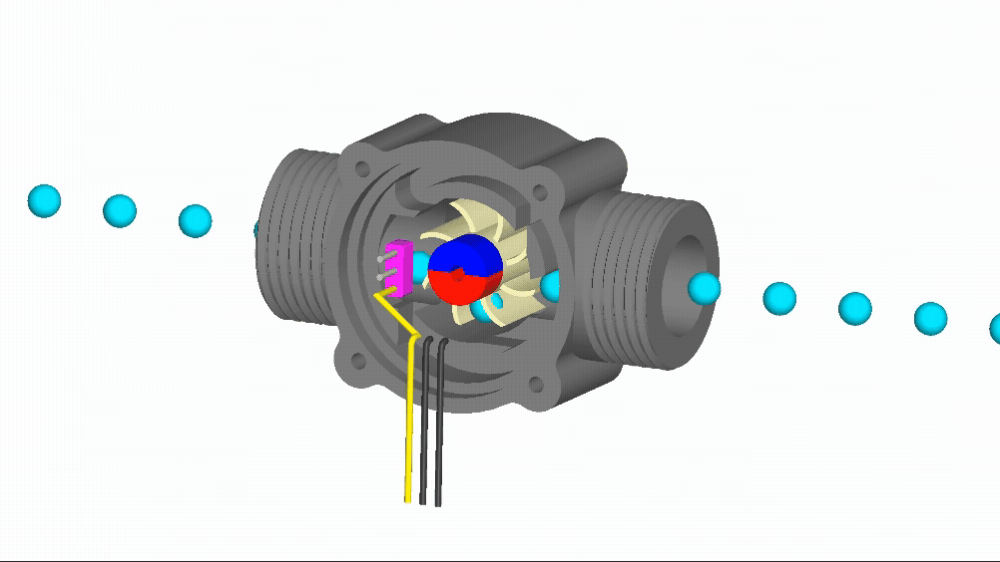
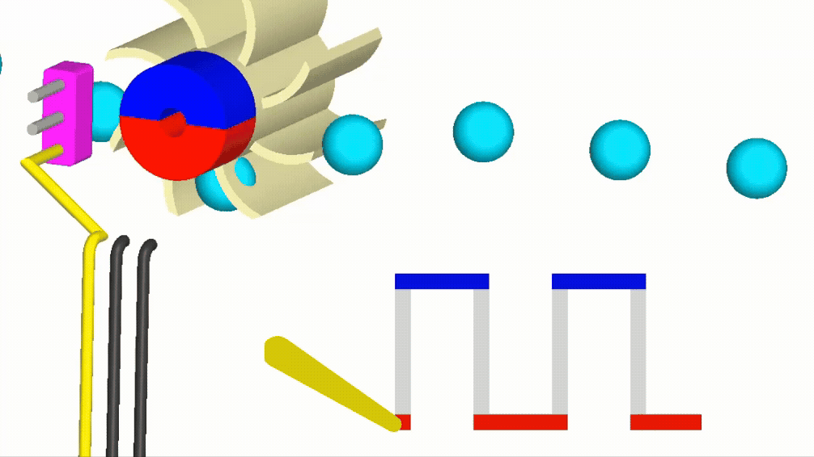

The object on the stand in front of you is called a paddle wheel flow meter. Fluid usually flows from right to left through the sensor, like this:

Behind the front cover is a sensor and circuit board. Here the

Removing another layer reveals the fluid chamber which contains a paddle wheel, magnet, and fluid. As the fluid flows from right to left it pushes on the paddle wheel, causing it and the magnet to rotate:

The

The rate at which the electrical signal alternates between high and low is proportional to the rate at which fluid flows through the device. Under normal operation the device is closed and fully sealed like in the first image.
That's how a paddle wheel flow meter works!